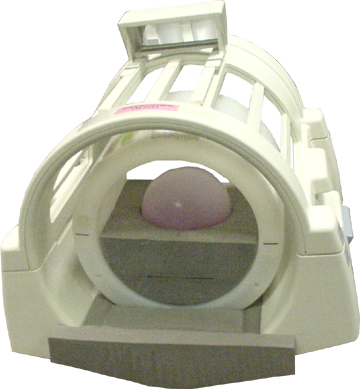

- 00000018WIA307B6E20GYZ
- id_131059643.0
- Aug 29, 2019 1:42:26 AM
Echo Planar Test (EPT)
Prerequisites
| Required persons | Preliminary requirements | Procedure | Finalization |
|---|---|---|---|
| 1 | Not Applicable | 2 hours | Not Applicable |
| Item | Quantity | Effectivity | Part number | Manufacturer |
|---|---|---|---|---|
| 100 mm Sphere Phantom for 3.0T | 2 | 3.0T |
2360034 | - |
| 100 mm Sphere Phantom for 1.5T | 2 | 1.5T |
46-317586G1 | - |
| EPI Foam Positioner, Body | 1 | - |
2170481 | - |
| Grafidy Base Plate | 1 | - |
46_317410G1 | - |
| EPI Head Loader Positioner | 1 | - |
2291292 | - |
| Head TLT Loader Positioner | 1 | - |
5110241 | - |
| Head Loader for 3.0T | 1 | 3.0T |
2360031 | - |
| Head Loader | 1 | - |
46-287899G1 | - |
| ||||||||
| Condition | Reference | Effectivity |
|---|---|---|
| - | - |
About this task
EPT combines the functionality of the current B0 Dither Calibration, Group Delay Calibration, and B0 Image Test into a single tool with a simple user interface. The output is suitable for remote support access, trending, and automatic checking of results against acceptance limits. In addition, EPT automatically updates the EPI calibration files when authorized by the user.
Startup
About this task
Be aware of the following before starting EPT:
-
For TwinSpeed, EPT is run for each GradMode, Whole-Body (WB) and Zoom (ZM).
-
Both GradModes can be selected in a single pass, and both require calibration at least once per installation and during any other routine system tests.
Procedure
- Make sure the correct type of phantom is used for the EPT.
- (For 3.0T systems) Use the pink phantom.
- (For 1.5T systems) Use the green phantom.
-
For 1.5T and 3.0T systems with LCC 300 or the short bore magnet, place a 100 mm sphere phantom, EPI foam phantom holder, and phantom loader in the head coil as shown below.
Figure 1. EPI Phantom - Positioning 1 
-
For 3.0T systems with the long bore magnet, place a 100 mm sphere phantom and EPI foam phantom holder without a phantom loader in the head coil as shown below.
Landmark on the center of the sphere, but do not advance to scan.
Figure 2. EPI Phantom - Positioning 2 
Figure 3. Landmark Marker 
Figure 4. EPI Phantom Positioning in Old Head Coil 
Image-Based Short Cross-Term Eddy Current Tool
About this task
If the B-zero image fails during the EPT, quit EPT and run the Image-Based Short Cross-Term Eddy Current tool. This tool may reduce EPI ghosting and is designed to work in conjunction with EPT. If B-zero image passes, proceed to Test Termination.
Procedure
Test Termination
Procedure
Finalization
Procedure
- Reset TPS to bring the system back into a known mode.
- Do a test scan to ensure the system is working properly before turning it over to the customer.